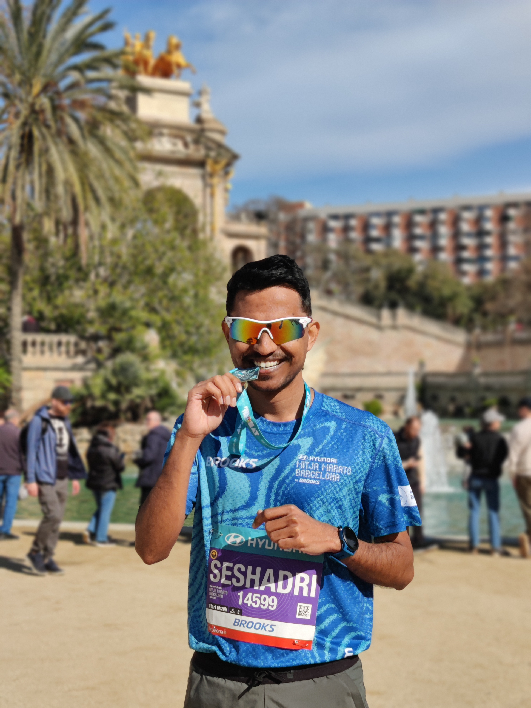
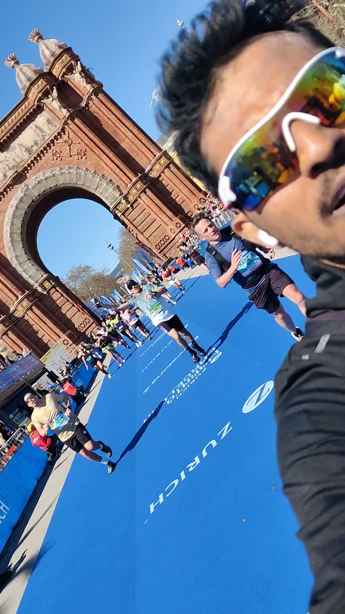
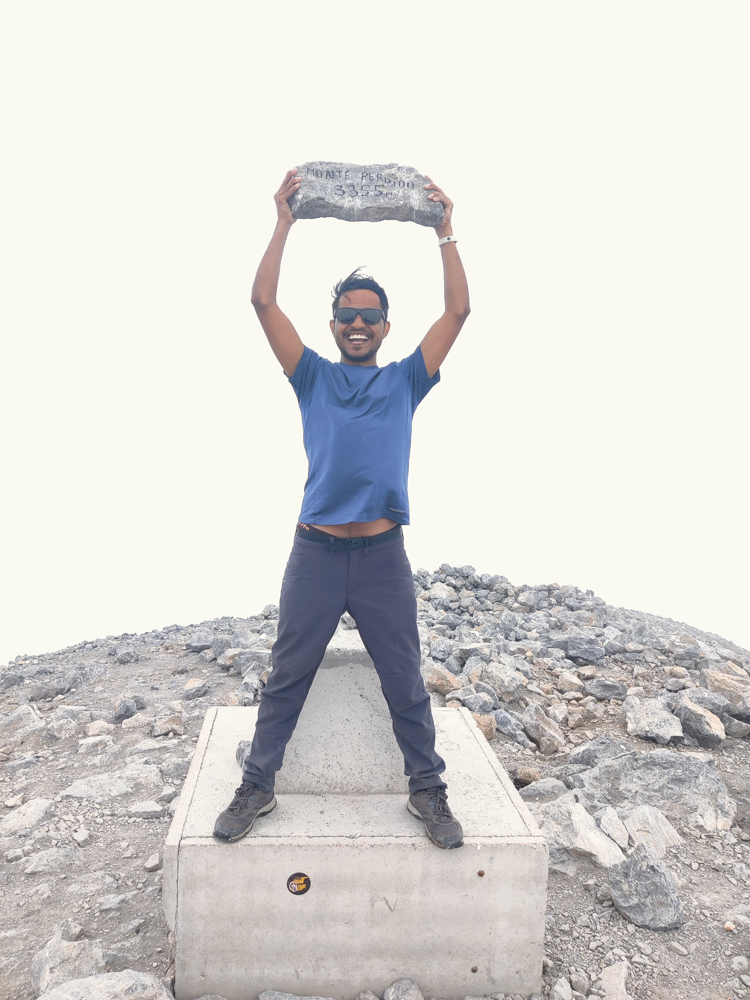

I study modelling, managementand emergent behavior in mixed traffic systems—bridging theory, simulation, and real-world mobility challenges.
Hierarchical control framework for optimizing lane usage in non-cooperative mixed traffic.
TR Part C • Control • Simulation
Microscopic simulation integrated with emissions modeling (Aimsun + PHEMlight).
Sustainability • Modeling
Learning-based control strategies for heterogeneous traffic systems.
AI • Control • Systems
CAVs • Traffic Flow • Control • Optimization • Reinforcement Learning • Simulation
Under Review
I am a PhD researcher working at the intersection of control systems, artificial intelligence, and transportation engineering.
My work focuses on how automated and human-driven vehicles interact, combining theory with simulation to understand system-level behavior.

Half: 1h 40m

Full: 3h 52m
Long runs bring clarity—ideas simplify and structure emerges.
View my runs →
Exploring trails, seeking elevation, and finding perspective in nature.
See trail photos →Experiencing new cultures, navigating new cities, and expanding my worldview.
Travel gallery →Open to collaborations and research discussions.
Email: your@email.com